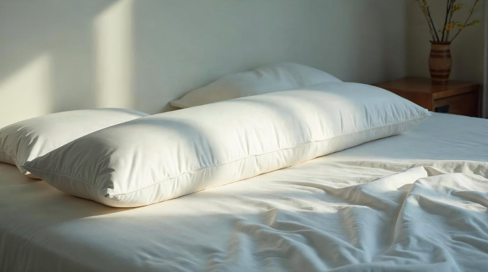
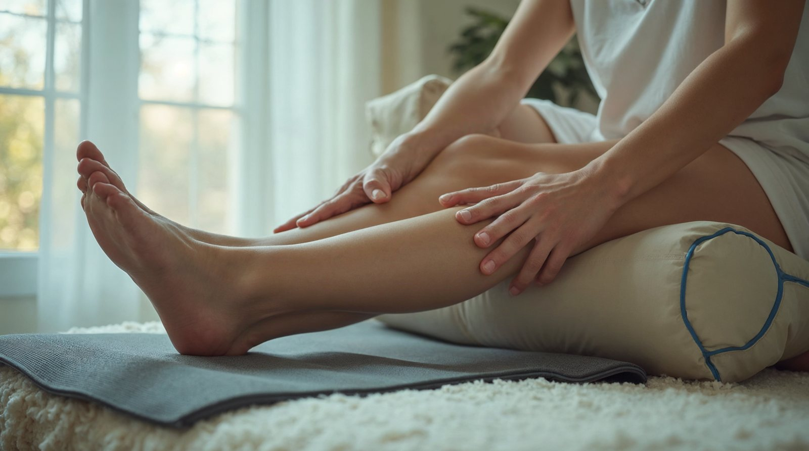
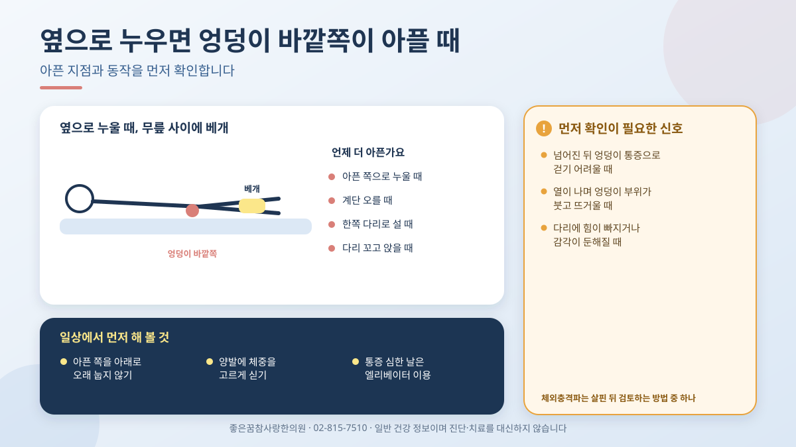

이종호 한의사 감수좋은꿈참사랑한의원 대표원장 (한의사 면허번호 19769)발행 2026-11-23 · 수정 2026-11-25
이 글의 차례
옆으로 누울 때 엉덩이 바깥쪽이 욱신거린다면, 체외충격파를 바로 이야기하기보다 어느 지점이 아프고 어떤 동작에서 심해지는지를 먼저 확인하는 것이 순서입니다. 밤에 아픈 쪽으로 돌아누우면 깨거나, 계단을 오를 때와 한쪽 다리로 설 때 더 불편하다는 분이 많습니다. 체외충격파는 이렇게 살핀 뒤 함께 검토할 수 있는 방법 가운데 하나입니다.
같은 엉덩이 옆 통증이라도 뼈가 튀어나온 자리 바로 위가 아픈 경우, 엉덩이 위쪽 근육이 넓게 뻐근한 경우, 허리에서 시작해 엉덩이와 허벅지 바깥으로 내려오는 경우는 살피는 방향이 다릅니다. 그래서 첫 진찰에서는 아픈 자리를 손가락 하나로 짚을 수 있는지, 그 자리를 누르면 평소 통증이 그대로 느껴지는지부터 함께 확인합니다.
왜 이런 불편이 생길 수 있나요
- 엉덩이 바깥쪽 뼈가 튀어나온 자리 위로 골반을 받치는 힘줄과 작은 물주머니(점액낭)가 지나가는데, 이 부위가 오래 눌리거나 반복해서 쓸리면 예민해질 수 있습니다.
- 한쪽 다리에 체중을 싣고 서는 습관, 다리를 꼬고 앉는 습관은 한쪽 엉덩이 옆에 부담을 몰리게 할 수 있습니다.
- 걷기나 계단 오르기를 갑자기 늘린 경우에도 엉덩이 옆 근육이 쉽게 지칠 수 있습니다.
- 딱딱한 바닥이나 얇은 요에서 옆으로 자면 뼈가 튀어나온 자리가 직접 눌려 밤 통증이 두드러질 수 있습니다.
- 40~60대 여성에게서 더 자주 보인다고 알려져 있어, 나이와 생활 변화도 함께 여쭙습니다.
- 허리에서 내려오는 통증이 엉덩이 옆으로 느껴지는 경우도 있어 구분이 필요합니다.
먼저 이렇게 여쭙니다
- 어느 쪽으로 누울 때 아프신가요? 반대쪽은 괜찮나요?
- 손가락으로 눌러서 가장 아픈 지점을 짚을 수 있나요?
- 계단, 오래 걷기, 다리 꼬기 중 언제 더 불편한가요?
- 한쪽 다리로 서거나 서서 양말을 신을 때 불편한가요?
- 허리 통증이나 다리 저림이 함께 있나요?
- 언제부터 아팠고, 그 무렵 활동량이 달라졌나요?
- 엉덩이 쪽에 주사나 수술을 받은 적이 있나요?

스스로 점검해 보세요
- 아픈 쪽으로 누우면 얼마 지나지 않아 욱신거린다
- 엉덩이 바깥쪽 뼈 근처를 누르면 평소와 같은 통증이 느껴진다
- 계단을 오르거나 한쪽 다리로 설 때 더 불편하다
- 오래 앉았다 일어날 때 첫걸음이 뻐근하다
- 다리를 꼬고 앉거나 한쪽 다리에 기대어 서는 습관이 있다
- 허리 통증이나 무릎 아래까지 내려가는 저림이 함께 있다
앞의 다섯 가지 가운데 여러 개가 해당한다면 엉덩이 옆 자체를 먼저 살피고, 마지막 항목이 함께 있다면 허리에서 내려오는 통증인지 구분하는 일을 같이 합니다.

일상에서 먼저 해 볼 수 있는 것
- 아픈 쪽을 아래로 두고 오래 눕지 않기
- 옆으로 누울 때 무릎 사이에 베개를 끼워 골반 높이를 맞추기
- 다리를 꼬고 앉는 습관 줄이기
- 서 있을 때 양발에 체중을 고르게 싣기
- 통증이 심한 날은 계단보다 엘리베이터 이용하기
무릎 사이 베개는 위쪽 다리가 앞으로 떨어지며 엉덩이 옆이 당겨지는 것을 줄이려는 것이어서, 무릎부터 발목까지 받칠 수 있는 길쭉한 베개가 더 편할 수 있습니다. 걷기 운동을 하고 있다면 갑자기 멈추기보다 거리와 언덕길을 잠시 줄이고, 아픈 날과 덜 아픈 날을 적어 두시면 진찰 때 활동량을 정하는 데 참고가 됩니다.
아픈 자리를 세게 문지르거나 단단한 도구로 오래 누르는 것은 예민함을 키울 수 있어 진찰 전에는 피하시길 권합니다.
예를 들면 이런 경우입니다
- 예를 들어 하루 종일 서서 일하며 한쪽 다리에 체중을 싣는 습관이 있는 직장인이라면, 서 있는 자세와 근무 시간, 퇴근 뒤 밤 통증이 어떻게 이어지는지를 함께 여쭙고 일하는 중에 체중을 옮겨 싣는 방법부터 이야기합니다.
- 예를 들어 건강을 위해 동네 언덕길 걷기를 갑자기 늘린 어르신이라면, 늘린 시기와 걷는 양, 계단을 오를 때의 통증을 확인하고 허리와 무릎 상태도 함께 살핀 뒤 걷는 양을 어느 정도로 조절할지 정합니다.
- 예를 들어 아이를 한쪽 골반에 걸쳐 안는 일이 많은 육아 중인 분이라면, 안는 방향과 시간, 밤에 아이 옆에서 한쪽으로만 눕는 자세를 함께 여쭙고 바꿀 수 있는 것부터 찾습니다.
얼마나 지켜보고, 언제 상담할까요
- 무리한 뒤 생긴 가벼운 통증이라면 며칠 동안 누운 방향과 다리 꼬기를 조절하면서 밤 통증이 줄어드는지 지켜볼 수 있습니다.
- 2~3주가 지나도 아픈 쪽으로 눕지 못하거나 계단에서 같은 통증이 이어진다면 진찰을 받아 보시길 권합니다.
- 밤에 자다 깨는 날이 늘어 낮 생활까지 지친다면 기간과 관계없이 상담해 보세요.
- 이럴 땐 바로 확인하세요. 넘어진 뒤 걷기 어렵거나, 엉덩이가 붓고 뜨거우며 열이 나거나, 다리에 힘이 빠지는 느낌이 생기면 기다리지 말고 영상 검사가 가능한 의료기관을 먼저 찾으세요.
한의원에서 함께 살필 수 있는 경우
- 엉덩이 옆 통증이 몇 주 이상 이어지는 경우 아픈 지점과 동작을 함께 살핍니다.
- 눌렀을 때 예민한 부위가 뚜렷한 경우 필요하다고 판단되면 초음파로 확인하고 체외충격파를 검토합니다.
- 허리와 골반의 균형이 함께 관련된 경우 추나와 침을 이어서 살핍니다.
좋은꿈참사랑한의원에서는 먼저 아픈 동작과 생활을 충분히 듣고, 허리에서 오는 통증인지 엉덩이 옆 자체의 문제인지 구분해 봅니다. 필요하다고 판단될 때 초음파로 힘줄과 물주머니 주변을 확인하고, 체외충격파가 맞는다고 판단되면 원내 장비(제우스·한일티엠) 가운데 부위에 맞는 것을 골라 낮은 강도부터 시작해 말씀을 들으며 조절합니다.
상태에 따라 침, 약침, 추나를 함께 정하고, 귀가 전에는 집에서 지켜볼 점과 다음에 확인할 동작을 알려 드립니다.
처음 오시면 문진으로 아프기 시작한 때와 누운 방향, 활동량 변화를 듣고 맥부터 짚어 본 뒤, 엉덩이 옆을 눌러 보고 한쪽 다리로 서기, 다리 꼬기, 허리 굽히기 같은 동작을 함께 해 봅니다. 체외충격파를 쓸지, 쓴다면 어느 자리에 어느 세기로 시작해 몇 번, 어떤 간격으로 이어 갈지는 진찰 뒤 함께 정하고 그 이유를 설명해 드립니다.
비용이나 보험 적용이 궁금하다면 방문 전 전화로 확인해 주세요.
이렇게 기록해 오시면 상담이 쉬워집니다
- 밤에 아파서 깬 날과 그때 누운 방향
- 계단, 오래 걷기, 다리 꼬기처럼 통증이 심해지는 동작
- 최근 새로 시작한 운동이나 늘어난 걸음 수
- 주로 자는 방향과 쓰는 매트리스나 요의 종류
- 복용 중인 약과 이전에 받은 치료
이런 증상은 먼저 확인이 필요합니다
- 넘어진 뒤 엉덩이 통증으로 걷기 어려운 경우
- 열이 나면서 엉덩이 부위가 붓고 뜨거운 경우
- 다리에 힘이 빠지거나 감각이 둔해지는 경우
- 쉬어도 밤마다 통증이 점점 심해지는 경우
체외충격파는 진찰 후 필요하다고 판단될 때만 하며, 대상과 횟수, 비용은 진찰 후 안내해 드립니다. 복용 중인 약은 처방한 의사와 상의 없이 줄이거나 끊지 않습니다.
함께 읽으면 좋은 글
- 엉덩이에서 다리로 저림이 내려올 때 한의원에서는 무엇을 먼저 묻나요?
- 엉덩이와 허벅지 뒤쪽이 아플 때 초음파로는 무엇을 살펴보나요?
- 체외충격파는 아플수록 좋은 치료일까요?

여쭙는 것
- 어느 쪽으로 누울 때 아프신가요? 반대쪽은 괜찮나요?
- 손가락으로 눌러서 가장 아픈 지점을 짚을 수 있나요?
- 계단, 오래 걷기, 다리 꼬기 중 언제 더 불편한가요?
생활에서 해 볼 것
- 아픈 쪽을 아래로 두고 오래 눕지 않기
- 옆으로 누울 때 무릎 사이에 베개를 끼워 골반 높이를 맞추기
- 다리를 꼬고 앉는 습관 줄이기
한의원에서 함께 살필 것
- 엉덩이 옆 통증이 몇 주 이상 이어지는 경우 아픈 지점과 동작을 함께 살핍니다.
- 눌렀을 때 예민한 부위가 뚜렷한 경우 필요하다고 판단되면 초음파로 확인하고 체외충격…
- 허리와 골반의 균형이 함께 관련된 경우 추나와 침을 이어서 살핍니다.
먼저 확인이 필요한 신호
- 넘어진 뒤 엉덩이 통증으로 걷기 어려운 경우
- 열이 나면서 엉덩이 부위가 붓고 뜨거운 경우
- 다리에 힘이 빠지거나 감각이 둔해지는 경우
한눈에 보는 표
| 구분 | 핵심 |
|---|---|
| 여쭙는 것 | 어느 쪽으로 누울 때 아프신가요? 반대쪽은 괜찮나요? 손가락으로 눌러서 가장 아픈 지점을 짚을 수 있나요? |
| 생활에서 해 볼 것 | 아픈 쪽을 아래로 두고 오래 눕지 않기 옆으로 누울 때 무릎 사이에 베개를 끼워 골반 높이를 맞추기 |
| 한의원에서 함께 살필 것 | 엉덩이 옆 통증이 몇 주 이상 이어지는 경우 아픈 지점과 동작을 함께 살핍니다. 눌렀을 때 예민한 부위가 뚜렷한 경우 필요하다고 판단되면 초음파로 확인하고 체외충격파를 검토합니다. |
| 먼저 확인이 필요한 신호 | 넘어진 뒤 엉덩이 통증으로 걷기 어려운 경우 열이 나면서 엉덩이 부위가 붓고 뜨거운 경우 |
자주 묻는 질문
엉덩이 옆 통증이면 모두 체외충격파를 하나요?
아니요. 아픈 지점과 동작, 허리에서 오는 통증 가능성을 먼저 살핀 뒤 필요하다고 판단될 때만 검토합니다.
치료 중에 많이 아픈가요?
느끼는 정도는 사람마다 다릅니다. 강도를 낮게 시작해 말씀을 들으며 조절합니다.
잘 때 어떤 자세가 덜 불편한가요?
아프지 않은 쪽으로 눕고 무릎 사이에 베개를 끼우거나, 바로 누워 무릎 아래에 쿠션을 두는 자세를 먼저 해 보시길 권합니다.
초음파는 모두 보나요?
아니요. 눌러 보고 움직여 본 뒤 힘줄 주변을 눈으로 확인할 필요가 있다고 판단될 때 함께 봅니다.
진료 시간은 어떻게 되나요?
좋은꿈참사랑한의원은 평일 09:30~20:00(점심 13:00~14:00), 토·일·공휴일 09:30~15:00에 진료합니다.
좋은꿈참사랑한의원은 재진 때 지난번 이야기부터 이어서 여쭙니다. 진료시간과 예약은 오시는 길에서 확인하세요.
어디서 상담받을 수 있나요?
좋은꿈참사랑한의원은 서울 동작구 만양로2길 2 신성빌딩 3층·5층(서울 동작구 상도동, 7호선 상도역 3번 출구 근처)에 있습니다. 한의사 3명(이종호 대표원장, 조영기 수석진료원장, 정원영 진료원장)이 진료합니다. 진료시간은 평일 09:30~20:00(점심 13:00~14:00), 토·일·공휴일 09:30~15:00이며, 방문 전 전화로 확인을 권합니다. 예약은 네이버 예약, 카카오톡 상담, 전화 02-815-7510로 받습니다.
이 글은 일반적인 건강 정보이며 개인의 진단이나 치료를 대신하지 않습니다. 증상이 있거나 복용 중인 약이 있다면 진료를 통해 확인하세요. 치료 효과는 개인마다 다를 수 있습니다.
작성 기준: 일반적으로 알려져 있는 건강 정보를 참고해 정리했습니다(대표원장 감수). 증상 기록은 1~2주 동안 하루 1회, 비슷한 시간에 적어 오시면 지난 상태와 비교하기 쉽습니다.